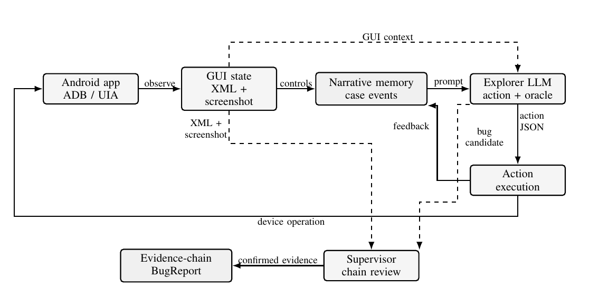

Purpose
A lightweight online version for tool review.
This page is a static online demo for reviewers. It does not run an Android emulator in the browser. Instead, it shows the tool workflow, expected artifacts, and a compact sample trace that mirrors the files produced by a local GUIdebuger run.
Live execution still requires a local Android device or emulator, ADB, UIAutomator, Python, and an OpenAI-compatible model endpoint.
What reviewers can inspect here
Functional case event log, narrative memory, Explorer decision, Supervisor review, and final BugReport fields.
Workflow
From GUI state to reviewed reports.

Deterministic Android automation observes and executes actions; the narrative layer stores case events; the Supervisor reviews the accumulated evidence chain before a report is accepted.
Artifact viewer
Inspectable outputs exposed by the demo.
Functional case event log
Records lifecycle role, selected action, observed result, and pending verification target.
Narrative memory
Maintains the active functional story across multiple GUI steps.
Supervisor review
Audits the case event chain and decides bug, no bug, or more verification.
Compact sample
Example Supervisor-reviewed BugReport.
| Field | Sample value |
|---|---|
| Application | DemoShop |
| Category | cross-page data inconsistency |
| Evidence | Explorer action, GUI state before/after, screenshot paths, Supervisor decision. |
| Supervisor outcome | Confirmed: cart badge and cart contents describe inconsistent states. |
{
"bug_id": "BUG-SAMPLE-001",
"source": "behavior_chain_review",
"case_phase": "verify",
"supervisor_verdict": "bug",
"evidence": [
"functional case event log",
"UI XML and screenshots",
"Explorer expected result"
]
}
Local execution
What is needed to run the full tool.
Android target
One emulator or physical device with ADB enabled and a target app opened in the foreground.
Python environment
Install the repository requirements and run python main.py.
Model endpoint
Configure an OpenAI-compatible endpoint in .env for Explorer and Supervisor calls.